| 日付 | 2023年8月14日（月） - 2023年8月19日（土） | ||||||||
|---|---|---|---|---|---|---|---|---|---|
| 山域 | 北アルプス | ||||||||
| メンバー | 家族（妻、長男・10歳） | ||||||||
| 山行形態 | 子連れ5泊6日旅館、山小屋、キャンプ泊 | ||||||||
| アクセス | 車 | ||||||||
| ルート (Map) |
|
4日目
早朝に小屋の外に出て見る。
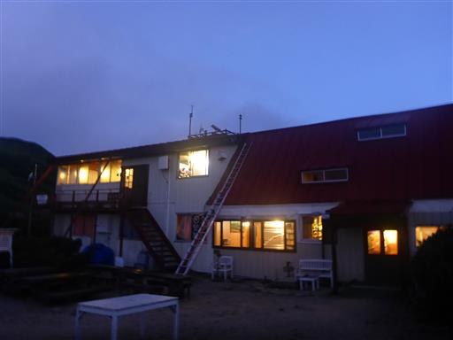
これまでより天気は良いが、雲の量が多い。
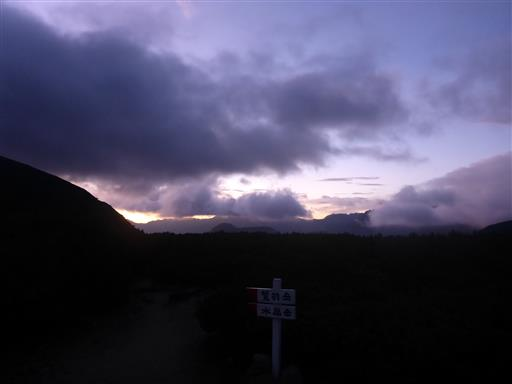
朝食を取って出発。残念ながら、すでに鷲羽岳は雲の中だ。
昨日は水晶小屋まで行けなかったので、その分本日の行程はハードだ。
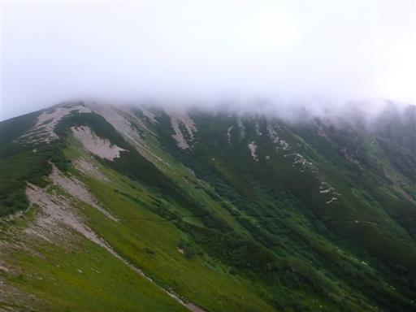
硫黄尾根が光を浴びて怪しく光っている。
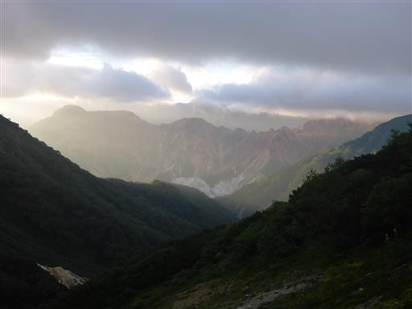
伊藤新道との分岐点。一度廃道になった登山道なのだが、復活を試みているらしく
まもなくこの道が通れるようになるようだ。
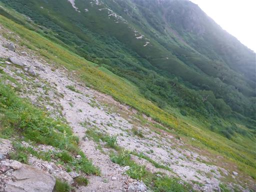
ときどき雲が消えて、山頂方面が姿を現す。

振り返るとハイマツの中にポツリと建つ三俣山荘が見える。
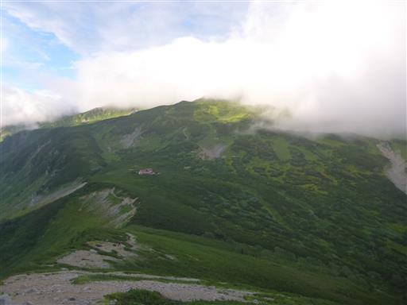
山頂直下は岩がちな地形だ。
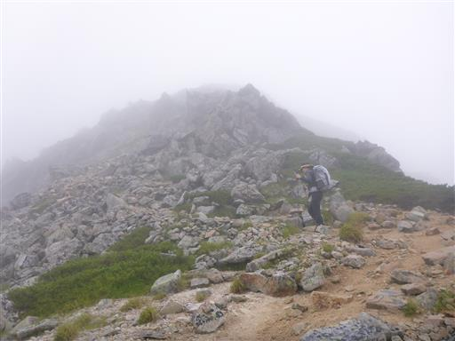
鷲羽岳山頂に到着。標高2924m。
山行3日目にして初めてのピークだ。残念ながら展望は全くない。
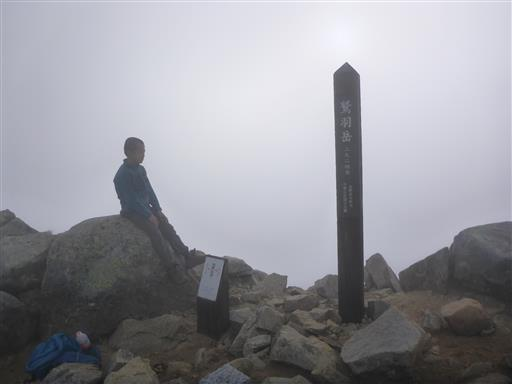
すぐに下山にかかり、次なる目的地の水晶岳を目指す。
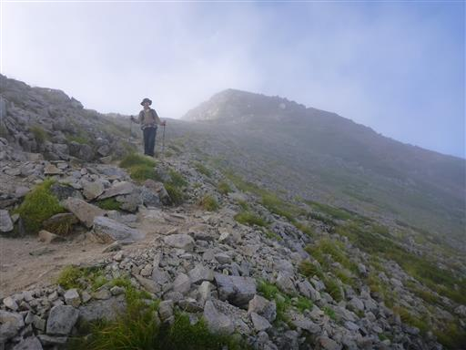
雲は多いが、それでも広がる展望は素晴らしい。
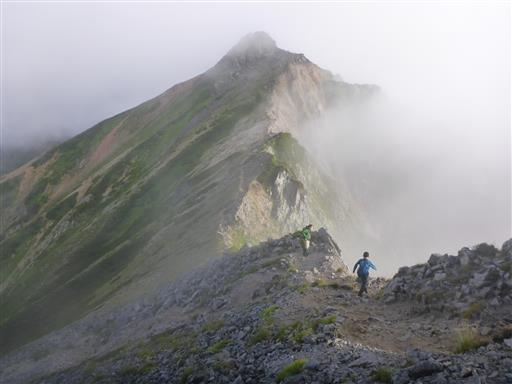
なんとブロッケン現象に遭遇。曇りの日ならではの光景だ。
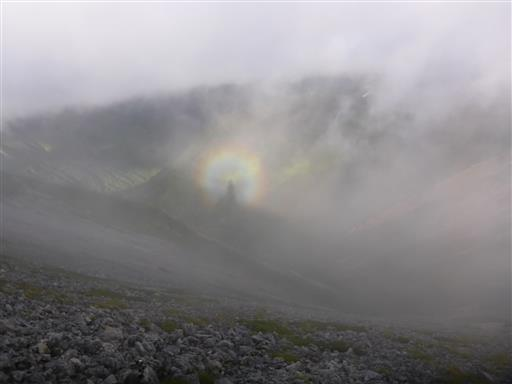
鷲羽岳を下ったらワリモ岳に向けての登り。
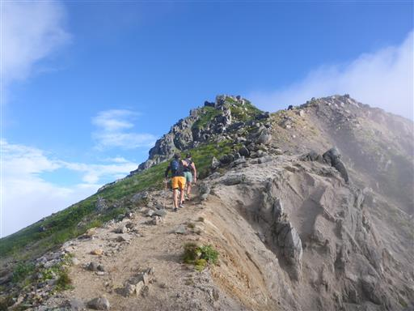
ワリモ岳山頂に到着。登山道は山頂直下を巻いている。
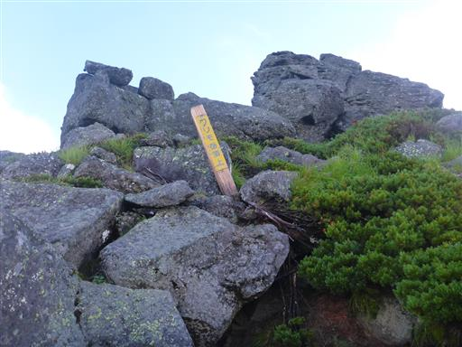
ワリモ岳を通過。岩だらけの山頂だ。
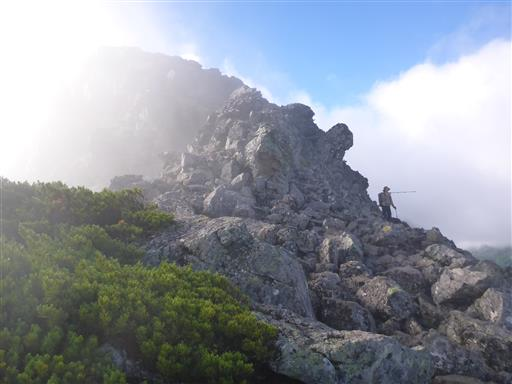
左手に祖父岳、その右奥は雲ノ平だ。
昨日に鷲羽・水晶に登って、本日は雲ノ平に行く予定だったが、その計画は叶わなかった。
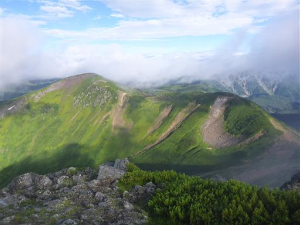
薬師岳。図体のでかい立派な山だ。山頂部の雲は取れなさそうだ。
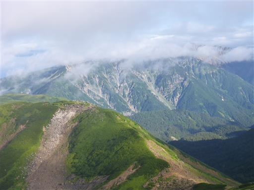
イワギキョウ。
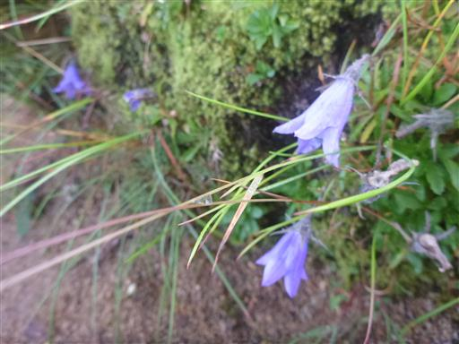
うねる尾根の向こうに水晶岳の姿が見えてくる。
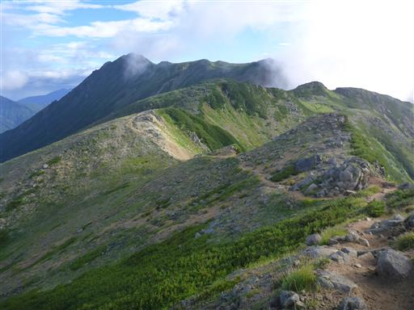
雲湧く夏山。
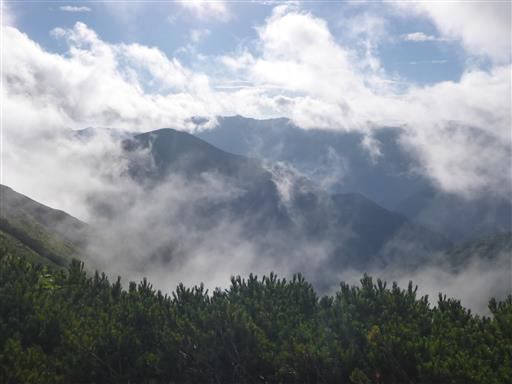
ワリモ北分岐を過ぎ、水晶岳にだいぶ近づいてくる。
こちらから見る水晶岳はあまり冴えない山容だ。
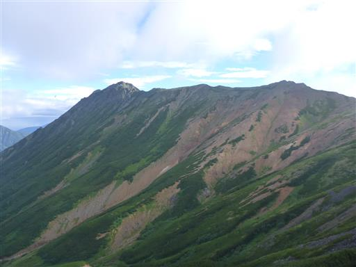
尾根が広がり、周囲にはお花畑が広がる。
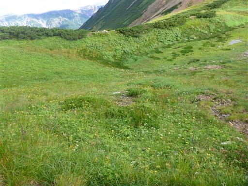
イブキジャコウソウ。
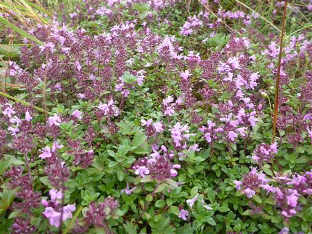
ヨツバシオガマ。この固体は花の色が濃い。
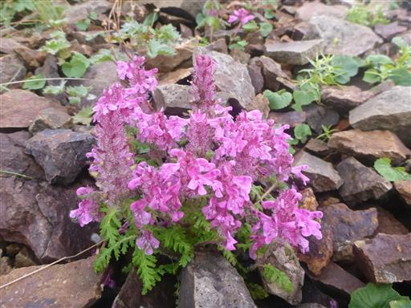
トウヤクリンドウ。
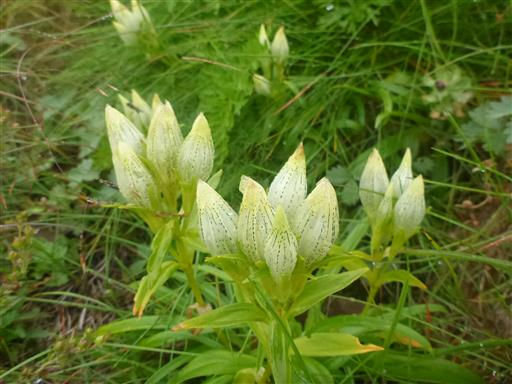
ミヤマコゴメグサ。
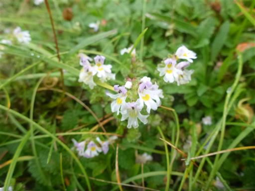
これは一体何だろう？
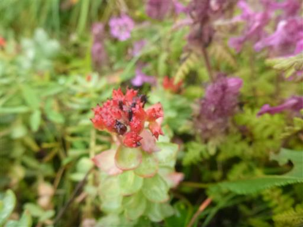
水晶小屋に到着。ここにザックをデポして水晶岳を目指す。
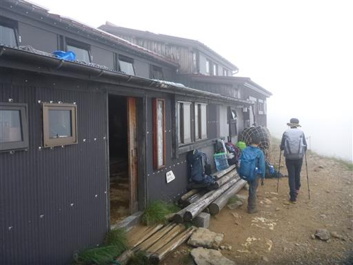
雲の中で出発。
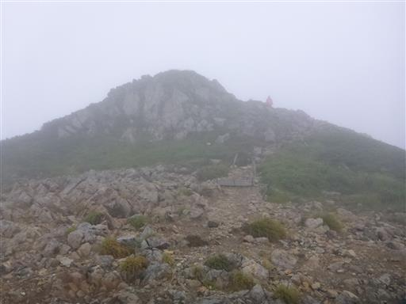
タカネツメクサ。
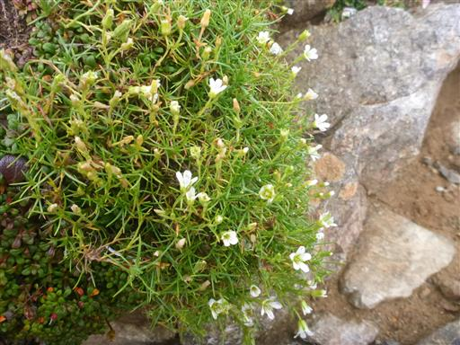
これから進む尾根道が見え隠れしている。
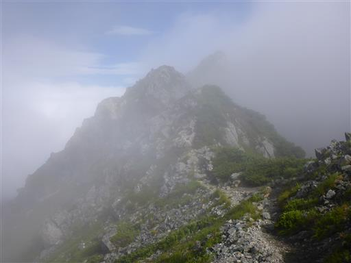
急峻な登山道とハシゴ。
水晶岳はこれまでの登山道と異なり、北アルプスっぽい岩がちな地形が広がる。
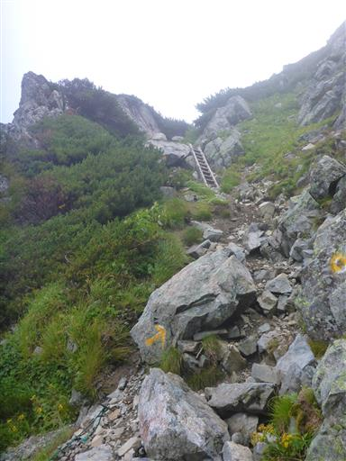
歩いてきた尾根を振り返る。
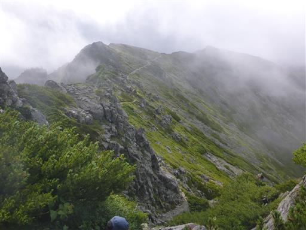
山頂が見えてきた。
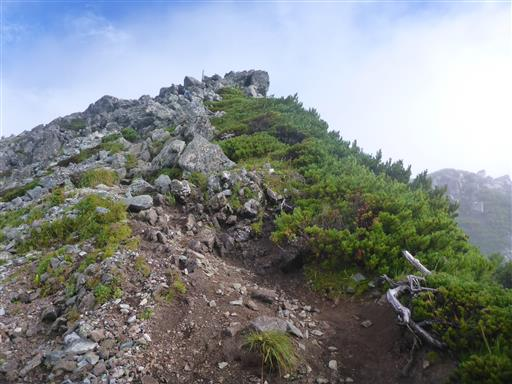
水晶岳に到着。標高2986m。
北アルプスの最奥に聳える名峰の割には、山頂標識はずいぶんとお粗末だ。
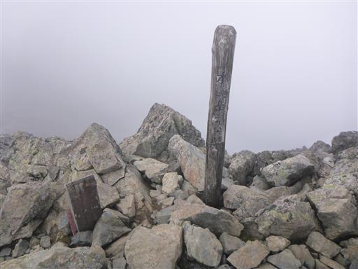
すぐ隣の北峰が雲の中に浮かんでいる。
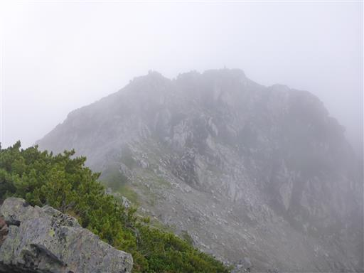
展望は広がらず、本日は双六小屋まで戻る必要があるので、早々に引き返す。
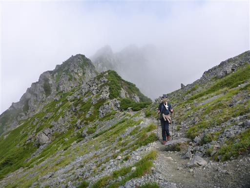
深い谷の向こう側に僅かに黒部湖が見えている。
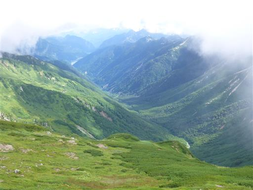
水晶小屋に戻ってくる。デポしたザックを回収。
背景は水晶岳だ。
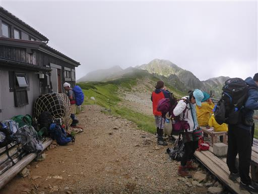
復路は、ワリモ北分岐から鷲羽岳を経由せず、黒部源流を経由するコースを選択。
この辺りはウサギギクが群生している。

岩苔乗越。この辺りは登山道の数が多く、あちらこちらに至るルートがある。
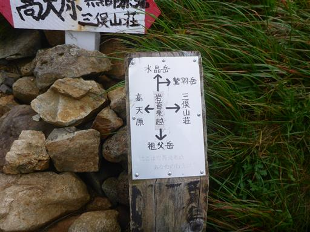
沢にチョロチョロと水が流れ出す。黒部川の最初の一滴だ。
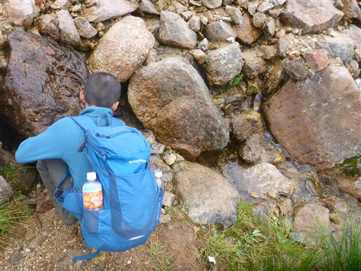
小さな沢を渡渉。
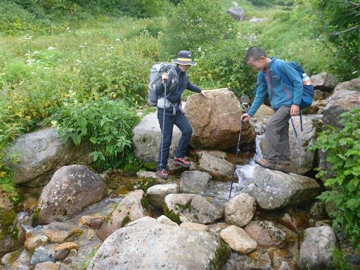
サラシナショウマ、トリカブトなど様々な花が咲いている。
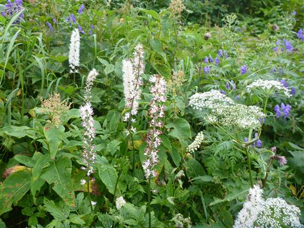
沢沿いに下って行くと傾斜が緩んできて木道が現れる。
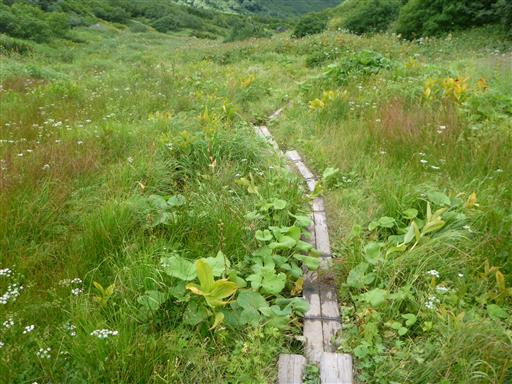
標高が下がって水量はだいぶ増えてきた。それでも水の流れはまだまだ穏やかだ。
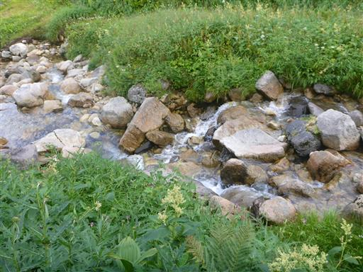
目の前に聳えるのは三俣蓮華岳。
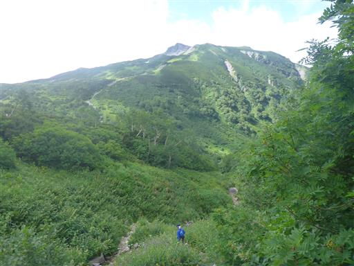
歩いてきた沢を振り返る。見えているのは祖父岳の辺りだ。
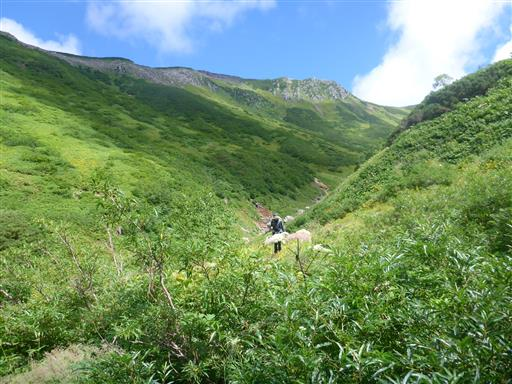
黒部源流の分岐点に到着。
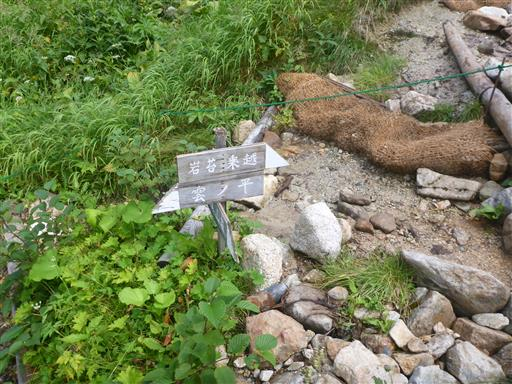
息子がトイレに行きたいと言っているので、三俣山荘まで急ぐことにする。
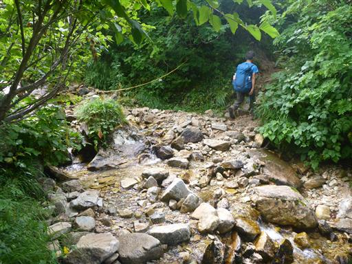
急ぐ息子、追いかける自分。ここまでずいぶん歩いているので、お互い余りスピードは上がらない。
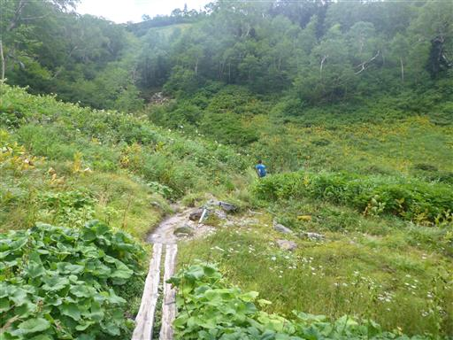
三俣山荘のトイレに駆け込む。
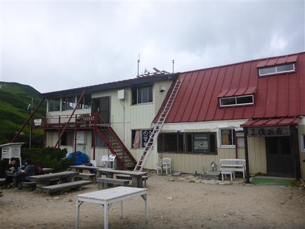
トイレ待ちの間、周囲の景色を眺める。
雲がだいぶ上がって、大天井岳の姿が見えている。
三俣山荘で昼食をとることも考えたが、午後から雨が降る予報のため、
昼食はスキップして双六小屋を目指すことにする。
この辺りは背の低いハイマツが広がっている。
三俣峠に到着。往路と同じく巻道を行く手もあるが、
頑張って三俣蓮華岳～双六岳を経由する尾根道を行くことにする。

眼下には往路に使った巻道コースが見える。
平地が広がるゆったりとした巻道だ。
背後には鷲羽岳が聳えている。
眼下のまだら模様に広がるハイマツが美しい。
足元に芋虫を発見。調べたころ、ミヤマセダカモクメの幼虫のようだ。
三俣蓮華岳に到着。標高2841m。
山頂は鷲羽岳の展望台。雲は多いが素晴らしい展望が広がる。
こちらは水晶岳。手前に見える沢が、歩いてきた黒部源流の沢道だ。
始めて山頂から展望が広がった。
ここから双六岳まで稜線歩き。疲れているのでアップダウンが結構きつい。

この辺りもウサギギク、ヨツバシオガマなどお花畑が見られる。
大きなキノコ。
途中で雨がパラついてきたので、カッパを着用。
双六岳に到着。標高2860m。
雲に覆われ視界は無くなった。
あとは双六小屋まで下るのみだ。
傾斜の緩い広い尾根を歩く。
足元にミヤマダイモンジソウを発見。
眼下に双六小屋が見えてきた。あと僅かだ。
巻道分岐点と合流。
無事、双六小屋に到着。ようやく昼食にありつける。
しばらくすると雨が降ってきた。滑り込みセーフだった。
台風が去り、週末に向けて天気は比較的安定。
テント場はいっぱい、双六小屋も恐らく満室で大賑わいだ。